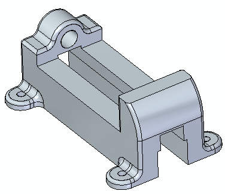
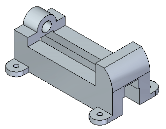
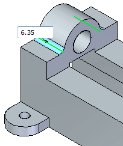
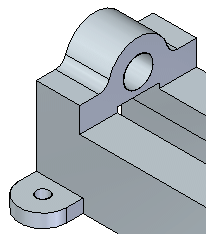
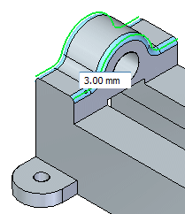
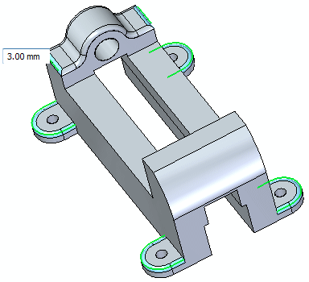
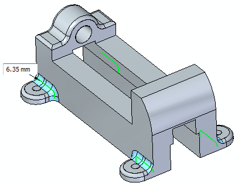
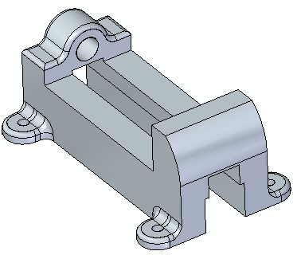
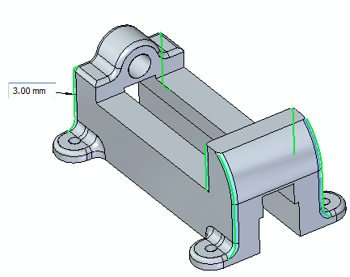

Activity: Round edges
This activity demonstrates the process of placing rounds on edges of a model.
Click here to download the activity file.

Open the vise base part file you previously created, or open the part vise.par.

On the Home tab→Solids group, choose the Round command .
In the Round command bar, in the Select box , click the Edge/Corner option.
Select the edges shown. Type in a radius of 6.35 mm into the dynamic input box.

Press Enter or right-click to apply.

Note that the Round command is still active. Do not exit the command.
Select the Chain option from the command bar. Select the two edge chains shown. Type 3 mm for the radius and press Tab.

Change to Edge/Corner option then continue selecting the edges shown below making sure to select the symmetrical edges on the backside.

Press Enter or right-click.
The Round command is active. Change to the Chain option, select an edge and type a radius of 6.35 mm. Press Tab.

Press Enter or right-click.

Finally, select the edges shown and type a radius of 3 mm.

Press Enter to accept.
Save and close the part file.
In this activity you placed rounds on edges of a 3D model. The round radius can be changed by selecting the round and changing the value in the dimension edit box.
Click the Close button in the upper-right corner of this activity window.